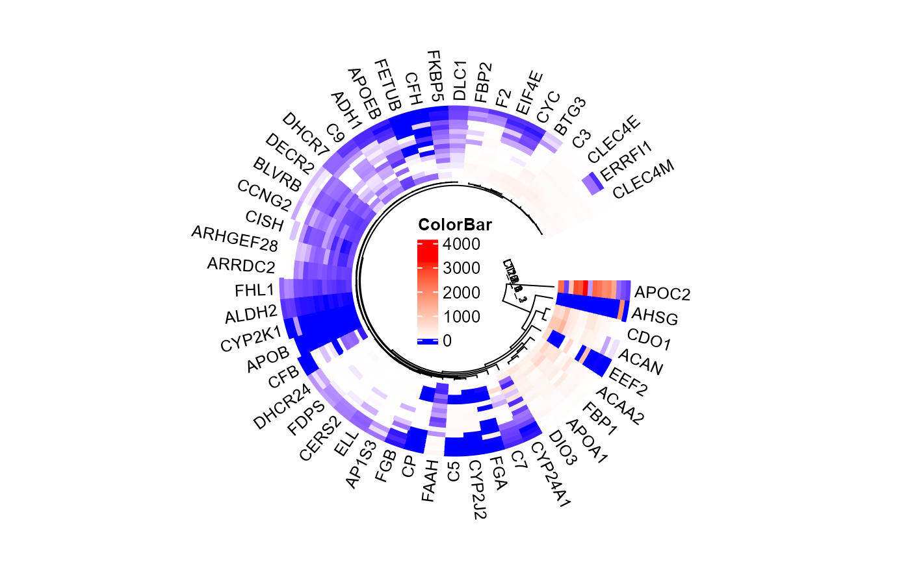

Circos heatmap plot for visualizing gene expressing in multiple samples.
Source:R/circos_heatmap.R
circos_heatmap.RdCircos heatmap plot for visualizing gene expressing in multiple samples.
Usage
circos_heatmap(
data,
low_color = "#0000ff",
mid_color = "#ffffff",
high_color = "#ff0000",
gap_size = 10,
cluster_method = "complete",
distance_method = "euclidean",
dend_height = 0.2,
rowname_size = 0.8
)Arguments
- data
Dataframe: include columns (Sample1, Sample2, ...), rows (Gene1, Gene2, ...).
- low_color
Character: min value color (color name or hex value). Default: "#0000ff".
- mid_color
Character: middle value color (color name or hex value). Default: "#ffffff".
- high_color
Character: high value color (color name or hex value). Default: "#ff0000".
- gap_size
Numeric: heatmap gap size. Default: 10, min: 0.
- cluster_method
Character: cluster methods. Default: "complete", options: "ward.D", "ward.D2", "single", "complete", "average", "mcquitty", "median", "centroid".
- distance_method
Character: distance methods. Default: "euclidean", options: "euclidean", "maximum", "manhattan", "canberra", "binary", "minkowski".
- dend_height
Numeric: dendgram height. Default: 0.20, min: 0.00, max: 0.50.
- rowname_size
Numeric: rowname font size. Default: 0.80, min: 0.10, max: 10.00.
Examples
# 1. Library TOmicsVis package
library(TOmicsVis)
# 2. Use example dataset
data(circos_heatmap_data)
# 3. Default parameters
circos_heatmap(circos_heatmap_data)

# 4. Set low_color = "#008800"
circos_heatmap(circos_heatmap_data, low_color = "#008800")
 # 5. Set gap_size = 5
circos_heatmap(circos_heatmap_data, gap_size = 5)
# 5. Set gap_size = 5
circos_heatmap(circos_heatmap_data, gap_size = 5)
 # 6. Set dend_height = 0.40
circos_heatmap(circos_heatmap_data, dend_height = 0.40)
# 6. Set dend_height = 0.40
circos_heatmap(circos_heatmap_data, dend_height = 0.40)